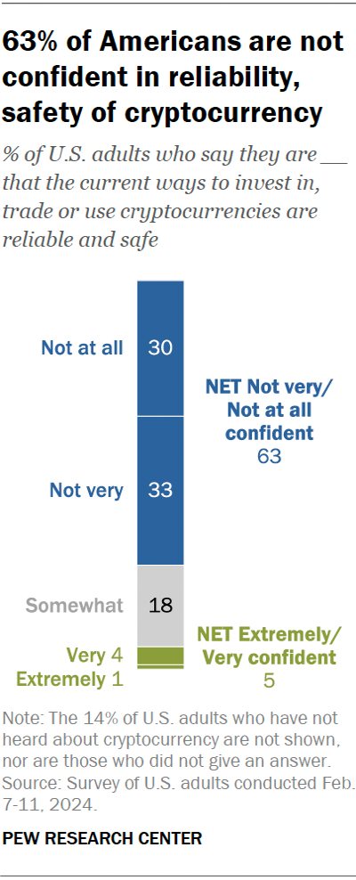

Section I: Introduction · Lesson 01-IN
Blockchain Course Welcome
Introductions
- Meet Your Instructors
- Student Introductions
- Name
- Favorite City & Why
- Self-rate (1-10): How well do you know blockchain?
- What do you want out of this course?
Why A Blockchain Course?
- Public understanding is still uneven: people often conflate blockchain, Bitcoin, and crypto markets
- Skepticism remains high because the technology is complex and its use cases are often unclear
- The underlying idea is older than Bitcoin: blockchain-style timestamping work goes back to the early 1990s
- Today the ecosystem is too large to dismiss as niche
- ~38.07 million cryptocurrencies - CoinMarketCap
- 18,000+ decentralized apps across 90+ blockchains - DappRadar
- 130 countries exploring digital currencies - Atlantic Council

Pew Research Center, October 24, 2024
Learning Objectives I
- Foundations
- Explain why blockchain emerged as an alternative to centralized trust
- Describe key primitives: hashing, signatures, Merkle trees, peer-to-peer networking, and consensus
- Platforms and mechanics
- Compare Bitcoin, Ethereum, and Hyperledger
- Work with wallets, transactions, smart contracts, and tokens
- Evaluate consensus tradeoffs in performance, security, and decentralization
Learning Objectives II
- Risks, policy, and practice
- Analyze blockchain vulnerabilities and network or consensus threats
- Assess real-world applications for feasibility, scalability, and social impact
- Explain implications for finance, identity, governance, defense, and policy
- Explain blockchain clearly to technical and non-technical audiences
Course Overview
- This course moves from first principles to real-world systems
- It combines technical foundations, major blockchain platforms, and applied case studies
- You will examine blockchain as:
- a technical architecture
- a financial and institutional phenomenon
- a policy, security, and strategic issue
- The goal is to understand blockchain broadly and technically well enough to see opportunities and gaps in your own applications around this technology.
Course Structure
- Introduction
- Cryptographic primitives
- Distributed fundamentals
- Consensus mechanisms
- Permissioned chains
- Bitcoin framework
- Ethereum framework
- Forensics
- Applications and synthesis
- Course link: https://blockchain.training-as-code.com/
Daily Schedule
| Time | Rhythm |
|---|---|
| 0905-1130 | Quiz, discussion, and morning lectures |
| 1300-1600 (T) | Afternoon lectures, then lab or applied exercise |
| After Class | Complete the reading and prepare for the next-day quiz and discussion |
Student Expectations
- Prioritize sleep. This course requires your cognitive effort!
- Be on time with working equipment
- Complete assigned readings after the class day
- Participate actively in discussion, labs, and quizzes
- Ask questions. Expect a wide range of knowledge in the room
- This is an UNCLASSIFIED environment, be mindful
- Explore. Read ahead, check sources, and investigate during class and labs
- Critiques and disagreements broaden understanding. Bring them at end of day and course
Tools and Setup
- Labs are a core part of the course and reinforce theory through hands-on work
- Lab activities include:
- cryptographic exercises
- consensus simulations
- blockchain network deployment
- smart contract development
- forensic analysis
- Students need:
- reliable Internet access
- a workstation capable of running virtual machines*
- the ability to install and configure required software*
*as fallback for cloud-hosted environment
Standards & Outcomes
- Standards
- You have been assigned a unique quiz handle for this course
- All quizzes are to be taken without use of Internet or notes
- Complete the quiz on time
- Results are used to gauge effectiveness and guide discussion
- Outcomes
- You should leave with a better technical and systems understanding of blockchain technology
- You should understand where blockchain came from, how it works today, and where it may be going
- You should gain the knowledge and confidence to think critically and creatively about blockchain technology, applications, and impacts
Student Questions
What questions do you have about this course?
Questions: As We Begin
- What do you think blockchain is actually for?
- What problems do you think it solves well, and what problems does it not solve well?
- What makes you skeptical, curious, or uncertain about this space?
Pre-Test
References
Sources
[1]
IACIS, “Public perceptions of blockchain and bitcoin,” 2022, Accessed: Mar. 25, 2026. [Online]. Available: https://iacis.org/iis/2022/4_iis_2022_243-253.pdf
[2]
Pew Research Center, “Majority of americans aren’t confident in the safety and reliability of cryptocurrency.” Accessed: Mar. 25, 2026. [Online]. Available: https://www.pewresearch.org/short-reads/2024/10/24/majority-of-americans-arent-confident-in-the-safety-and-reliability-of-cryptocurrency/
[3]
S. Haber and W. S. Stornetta, “How to time-stamp a digital document,” J. Cryptology, vol. 3, no. 2, pp. 99–111, Jan. 1991, doi: 10.1007/BF00196791.
[4]
CoinMarketCap, “Number of cryptocurrencies tracked.” Accessed: Mar. 23, 2026. [Online]. Available: https://coinmarketcap.com/charts/number-of-cryptocurrencies-tracked/
[5]
DappRadar, “DappRadar rankings.” Accessed: Mar. 25, 2026. [Online]. Available: https://docs.dappradar.com/rankings
[6]
Atlantic Council, “Central Bank Digital Currency Tracker.” Accessed: Oct. 20, 2025. [Online]. Available: https://www.atlanticcouncil.org/cbdctracker/